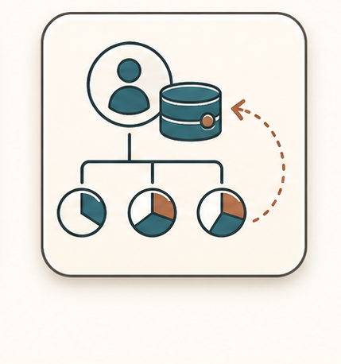
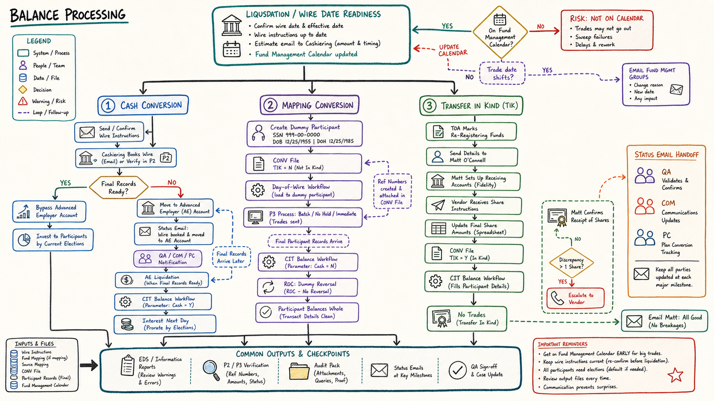

01
Create the dummy participant before running the mapping workflow.
Mapping conversions use day-of-wire workflows and CONV files to post fund-level balances to the dummy participant. Final participant balances are later loaded through CIT balance, and the dummy participant is reversed through ROC.

Create the dummy participant before running the mapping workflow.
Build the CONV file with case number, prior fund code, TA fund code, ref number, amount, and TIK indicator N.
Run the day-of-wire workflow to load fund-level detail to the dummy participant.
Process in P3 using batch no-hold and process immediate so trades go out.
When final files arrive, run CIT balance with cash conversion wire set to N.
Reverse the dummy participant in P3 ROC so only real participant balances remain.
The dummy participant SSN is 999-00-0000.
If the dummy participant is missing, the workflow can be painful to untangle.
Mapping uses the ref numbers from the fund mapping file, not a single cash wire ref number.
